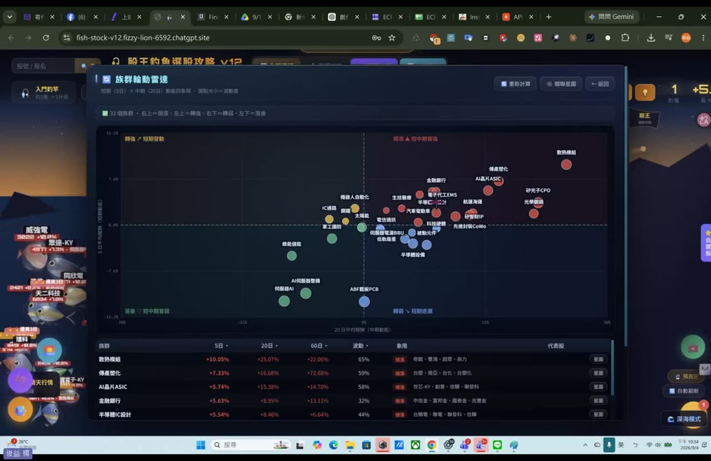
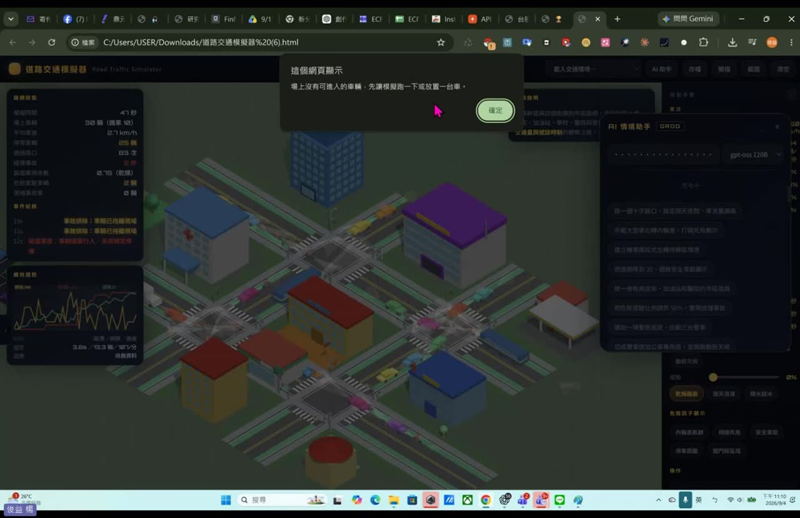

0. 課程資訊與教材
| 課程名稱 | 生成式 AI 應用電台・訂閱制第三季 釣魚選股補充課程 |
|---|---|
| 直播日期 | 2026/09/04（四），本段錄影全長 2 小時 15 分 06 秒（當晚講到接近午夜） |
| 講師 | 益師傅（楊俊益，暱稱 ECF；智慧立方有限公司） |
| 參與人數 | 約 90 位學員（Teams 線上直播，錄影中人員計數在 86 至 90 人之間） |
| 本堂主題 | 從公開排行榜抓資料、匯入自製工具、接上免費 AI API，做出一份可讀的個股分析；並示範產業關聯、族群輪動與一鍵研究報告。課末大幅談 AI 協作開發的方法論 |
| 課程教材 | Drive 資料夾「釣魚選股補充課程」：課堂錄影 ×1、釣魚選股_v12.html（單檔工具，約 1.3 MB） |
| 要先準備 | Chrome 瀏覽器、Instant Data Scraper 擴充功能、一個 Google 帳號（用來註冊 Groq 與 FinMind） |
| 課程定位 | 老師在課末特別澄清：這門課教的是 AI 的深度應用，不是教股票，也不是教「怎麼從零寫出釣魚選股這支程式」 |
📁 課程資料夾（Google Drive）
錄影與工具檔都在這個共享資料夾。老師在課末答應會把 V12 的原始程式也放進來給訂閱制學員研究：
🎬 課堂錄影（可直接在頁面播放）
單段錄影，2 小時 15 分。前 30 分鐘是資料抓取與環境設定（要跟著做的部分），30 到 75 分鐘是工具功能巡禮，75 分鐘後轉向實際釣魚示範與 AI 開發方法論。
釣魚選股_v12.html 請到上面的 Drive 資料夾自行取用。1. 一張圖看懂這堂
前半堂就是一條資料流。把這五步看懂，工具換成什麼都一樣。
| 步驟 | 在哪裡做 | 做什麼 | 時間碼 |
|---|---|---|---|
| 1 | Yahoo 股市 台股漲跌幅排行 | 打開當天的漲幅排行榜，決定要抓上市、上櫃還是合併 | 02:00 起 |
| 2 | Instant Data Scraper （Chrome 擴充功能） | 把網頁表格抓下來，逐欄改成中文欄位名，下載成 CSV | 04:44 起 |
| 3 | 釣魚選股 v12 | CSV 匯入，設定篩選條件（全部／只要漲停／強勢股／成交量下限），魚就進池了 | 17:44 起 |
| 4 | Groq 平台 | Google 登入拿一把免費 API Key，貼進工具的「AI 設定」 | 22:46 起 |
| 5 | 釣魚選股 v12 | 拋竿 → 等魚上鉤 → 收線，對釣到的那一檔跑 AI 分析 | 28:00 起 |
2. V12 改了什麼［01:09］
老師開場先講版本差異，因為這會影響你能不能跑得動。
- 介面整個換掉，功能比 V11 多很多；魚的動畫也做得更活潑，尾巴會擺、擺幅更大。
- 釣魚的方式沒有改，核心操作跟舊版一樣，不用重學。
- 新增產業關聯與供應鏈的概念：產業關聯圖、供應鏈星脈圖、族群輪動雷達，老師說這幾個都是 V12 才做的。
- 新增只抓漲停的篩選，以及成交量下限。
- 改成雲端共用連結。跟以前直接給程式檔不同，這次先給連結，手機、平板、無痕視窗都能開。
- 舊版 V10、V11 已經不能用了。原因不在程式，在於 Groq 平台上的 AI 模型一直在換，舊版接的模型已經下架。一定要用 V12。
3. 第一步：把排行榜抓成 CSV［02:00–17:40］
先想清楚：為什麼不直接用程式抓
這是老師特別停下來解釋的一段，因為學員都會問。
所以老師的做法是：不跟網站對抗，改用擴充功能，以正常瀏覽的方式把畫面上已經呈現的表格取下來。
要裝的東西：Instant Data Scraper
- 到 Chrome 線上應用程式商店，搜尋 Instant Data Scraper，加到 Chrome
- 裝好之後，點瀏覽器右上角的擴充功能圖示
- 找到 Instant Data Scraper，把大頭針按下去，讓它固定顯示在工具列上
打開排行榜
到 Yahoo 股市 → 台股行情 → 漲跌幅排行，選漲幅排行。上市、上櫃、合併三種可選，每種都是前 100 名。
4. 第二步：欄位對應［10:00–17:40］
老師在這一步花了最久，因為錯在這裡，後面全部白做。
操作順序
- 在漲幅排行的頁面上，點一下工具列那顆圓形圖示（老師叫它「寶可夢球」）打開抓取面板
- 面板會鎖定畫面正中央的那張表格，並抓出一堆預設欄位，欄位名稱多半不是中文
- 按 Reset columns 讓它回到原始狀態，再開始一欄一欄改
- 用不到的欄位（例如「連結」）直接按 ✕ 刪掉
- 把留下來的欄位，改成跟網頁上那一欄的名稱一模一樣
- 確認無誤後按 下載 CSV，檔案會存進「下載」資料夾
要對應的欄位
| 欄位 | 說明 |
|---|---|
| 排名 | 名次 |
| 股名 | 公司名稱 |
| 股號 | 股票代號 |
| 股價 | 成交價 |
| 漲跌 / 漲跌幅 | 漲跌金額與百分比 |
| 最高 / 最低 / 價差 | 當日高低與價差 |
| 成交量 / 成交金額 | 後面設篩選條件會用到 |
錯的欄位不會報錯，只會安靜地產出錯的分析，這是最難察覺的那種錯。
兩個會卡住的地方
5. 第三步：CSV 匯入與篩選條件［17:44–21:30］
回到釣魚選股 v12，點 CSV 匯入，選剛剛下載的檔案，開啟。這時候會出現篩選條件，這一步決定你的池子裡有幾隻魚。

四種選法，對應四種操作風格
| 選法 | 當天實際隻數 | 適合誰 |
|---|---|---|
| 全部 | 符合條件 78 檔（老師說原始是 96 檔，少掉的原因他自己也說不確定） | 想看整體盤面 |
| 只要漲停 | 13 檔 | 老師說「你野心比較大」，只要最強的 |
| 強勢股（漲幅 > 5%） | 74 檔 | 當天實際採用的設定，範圍合理 |
| 溫和型 | 依設定 | 不追漲停，找尾盤收斂、看隔日表現的人 |
成交量下限：這條是保命用的
「交易張數太少的你不要，因為這個有時候是炒作。有些股票才一、二十塊，但是它買的量就只有幾百張，這個就不要碰。」
「你買得到，不代表你賣得掉。它漲上來之後你想要脫手，你脫不了。」
他也提醒，聽到第四台名嘴在報的那種只有幾十塊的，最要小心。這一點他在後面實際釣魚時又講了一次：「你釣到的魚一定要有量，不然你進得去出不來。」
6. 第四步：申請 Groq API 金鑰［22:46–25:00］
先搞懂 API 是什麼
老師的原話：「API 就是程式跟程式間的串接，我要藉由 AI 的能力串接，串接一個不用錢的平台。」這個平台叫 Groq，上面有很多 AI 模型可以用，而且免費。
怎麼申請
- Google 搜尋 groq api，進到 Groq 的開發者平台
- 用 Google 帳號註冊登入（老師現場給大家 30 秒）
- 到 API Keys 頁面，按 Create API Key 建一把，複製起來（
gsk_開頭） - 回到釣魚選股 v12，點左上角 AI 設定
- 把 Key 貼進去，分析模型選 GPT-OSS 120B（推薦・文字主力）
- 可以順手填署名用的名字，按儲存設定


gsk_ 開頭的 Key，選 GPT-OSS 120B，儲存。旁邊就有「免費取得 →」的連結。［23:01］這是所有串接第三方 AI 平台的工具都會遇到的事：模型會退役，工具要跟著改。你自己做的單檔工具過幾個月也一樣可能要回頭改模型名稱，這是常態，不是壞掉。
7. 第五步：釣魚，看 AI 個股分析［28:00 起］
操作只有一句話，畫面下方就寫著：「點擊海面拋竿 → 等魚上鉤 → 再點一次收線！」釣到哪一隻，就對那一檔跑一次 AI 分析。
分析面板裡有什麼

- 技術指標標籤：MA 多頭排列、量能、MACD、KD、布林通道位置，一眼掃過去就知道這檔現在什麼狀態
- 短線預測：一段白話文，例如「預計未來 5–10 日若持續站上壓力位，股價有望測試 380 元；若回檔則可能在 350 元附近盤整」
- 三個價位卡：壓力、停損、停利
- 風險提醒：條列這檔目前的風險，例如 KD 進入超買、外資賣超
- 基本面指標：本益比、殖利率、EPS、股價淨值比
- 消息面分數：以 100 分為滿分的量化分數，附一句話說明
- 散戶魚群與潮汐預測：散戶魚群看融資（老師說當天抓不到），潮汐預測用的是艾略特波浪理論，會告訴你目前在第幾浪。老師自己補了一句：「這個參考看看，這不完全是正確，這是一個理論。」
- 相關新聞：抓當期的產業與個股新聞標題
8. 交叉查證與產業新聞［39:00 起］
老師沒有停在工具裡面。整堂課他反覆做同一件事：工具給了結論，就回去原始網站看一眼對不對。


工具內建的 K 線也能查


產業新聞：要另外去 FinMind 拿一把 Token［52:29–54:00］
這是很容易漏掉的一步。工具的「產業新聞」功能不是內建資料，是去 FinMind 這個台股資料平台抓，所以要另外申請。
- 從工具裡的連結進到 FinMind，用 Google 帳號註冊登入
- 它會給你一個 Token（不是 API Key），整串複製起來
- 回到工具，貼進 FinMind 的欄位，按下儲存
- 接著就抓得到產業新聞了，可以選只看利多、只看利空，或全部都看
9. 產業關聯、供應鏈與族群輪動［51:10–71:00］
這是 V12 最有意思的新東西，老師說族群輪動那一塊「非常非常重要」。
產業關聯圖：同族群，但不一定是上下游
釣到一檔之後按產業關聯圖，它會畫出同屬性的個股。老師特別澄清一件容易誤會的事：「你發現它有關聯，但也不是直接關聯。這四檔股票是可能屬於同屬性，光學鏡頭，但彼此不是上下游的關聯，就是獨立的。」
供應鏈星脈圖：把個股放回產業鏈的位置

- 把個股放到上游、中游、下游的位置，看它在鏈上的哪一段
- 會標出各層今日平均漲幅，直接比較上中下游哪一段在動
- 列出此鏈同池的魚，告訴你今天池子裡還有哪幾隻在同一條鏈上
- 鏈上的公司即使不在今天的排行榜裡也會列出來。老師說：「它雖然不是在魚的排行榜裡頭，但是也可以提供給你參考啊。」
- 可以再叫 AI 供應鏈解讀，讓模型解析整條鏈的上下游關係
族群輪動雷達：這一段老師講了三次「很重要」［59:34 起］

| 象限 | 意思 |
|---|---|
| 右上 | 領漲：短期與中期都強 |
| 左上 | 轉強：中期還沒起來，短期先動了 |
| 右下 | 轉弱：中期還在高檔，短期已經退了 |
| 左下 | 落後：兩邊都弱 |
下方表格列出每個族群的 5 日、20 日、60 日漲幅、波動度、所在象限與代表股。當天畫面上散熱模組是 5 日 +10.05%、20 日 +25.07%；傳產塑化的 60 日來到 +72.68%。
他也用同樣的邏輯講整堂課的立場：「而不是看人家說漲那個就買那個，這樣比較不好啦。」
族群那一區還有一張熱力圖，用顏色深淺看哪一個族群現在最熱，以及池子裡這些股票的強度分布。
10. 工具巡禮：選股、預測與一鍵報告［62:40–70:00］

選股工具
| 功能 | 老師實際講了什麼 |
|---|---|
| 全市場排行 | 會去抓證交所資料，但常常卡住。老師的建議很務實：「我建議大家自己截圖貼進來是最快的，不然在這裡他有時候就卡住了。」 |
| 條件篩選器 | 老師說他 PO 這張很多人喜歡。可以設條件掃描池子裡的股票，例如「剛站上 20 日均線」「有量增」，掃完幫你把符合的挑出來，還附評分。 |
| 多股比較 | 輸入幾檔股票一起比對，看哪一檔比較符合你的需求。 |
| 今日 CSV 再篩選 | 不用重抓，直接對今天匯入的資料再篩一次。 |
一鍵研究報告［65:53–66:56］

- 可以下載成 PDF 或 PNG，檔名格式是
研究報告_股號_日期.pdf - 可以先加上 AI 的解讀，連同資料一起產生報告
- 六個指標卡裡，期間最大回撤最該看，它告訴你這檔過去最慘掉過多少
- 老師自己吐槽了一句想改的地方：黑底雖然好看，但「假如你要印出來，這個碳粉會用得很多」，所以他想改成白底
預測與警示［67:05–69:26］
- 預測看漲／看跌：按下去讓 AI 根據前面所有推論給一個方向。老師現場示範時，按看漲跟按看跌，它都回答看漲。
- 預言記錄：如果你之前對某一檔按過預測，下次再叫出同一檔，它會把之前的預測跟現在的結果做比對，看當初猜得準不準。
- 警示中心：可以設條件觸發提醒。
他也說明為什麼不把即時功能加進來：這支釣魚選股跟他另一支專業分析版是刻意做功能區隔的，「不要讓專業版有的功能在釣魚也有，這樣不是很奇怪嗎？到底要以誰為主？」
11. AI 釣魚教練［49:36 起］
釣到一檔之後可以直接跟 AI 對話，它已經把那檔的資料讀進去了。老師介紹它的方式是：「你不用再到 ChatGPT 問他了，這裡剛剛你找到了資料，你可以直接在這邊提問。」

- 六個快捷問題：現在能買嗎、目標價、最大風險、停損設哪、法人動向、技術訊號
- 也可以直接打字問，它會用釣魚的比喻回答
- 現場示範問「目標價是多少」，它回在 380 左右，並說明站上 365 之後有機會測到 380，跌破 350 就要收線
「你有時候會算，但是 AI 比你會算，他擁有的是背後的大數據。準不準是在於你相不相信的問題啦，AI 也不是百分之百。他只是說就這種推論的數值上面來看，他得到的結果是這樣。」
而且他當場給了一個驗證的方法：「你過 380 之後再去分析一下這一段，看它到底準不準。」把 AI 的預測當成一個可以事後驗證的假設，不是當成答案。
12. AI 開發現場：除錯與臨場示範［56:31–74:31 · 95:00–99:43］
這一段沒有漂亮的成果畫面，但如果你想學怎麼跟 AI 一起做東西，它比前面所有功能加起來都值得看。
現場遇到 BUG，老師沒有跳過
示範供應鏈星脈圖時，點 K 線圖沒反應、返回鍵要按兩次才回得去。老師當場停下來查，一邊講解一邊試，還把畫面截圖下來說待會修。
- 他先誠實承認：「這裡是有 BUG，我再查一下，不好意思。」
- 一位學員在線上幫他診斷出真正原因：K 線圖其實有開，只是被自己的上層視窗蓋住了；返回要按兩次，是因為第一次關掉藏在下面那層，第二次才關掉自己
- 老師的反應：「好，那我再去罵 Claude 好了，說你可不可以好好做呢？沒有啦，Claude 已經算蠻厲害的，我覺得啦。」
- 他當場承諾修好後直接覆蓋雲端連結，並在社團通知大家
改 A 弄壞 B，是所有用 AI 改程式的人都會撞到的事。老師的處理方式不是假裝沒發生，而是當場記錄、事後修、再重新發布。這就是真實的迭代流程。
另外兩個他也當場承認要調的小問題：族群星圖下拉選單會跳回上一個選項；畫面解析度沒有特別設定，要用 Ctrl + 滾輪 自己調，「調太大魚就會浮到半空中」，另外把光影特效關掉，魚會游得比較順。
臨場示範：當場做一支道路交通模擬器［95:00–99:43］
學員說想看他設計程式的完整過程，老師就直接開 Claude 做一支給大家看。他挑的不是俄羅斯方塊那種練習題，而是他最近實際做給交通部參考的東西。

- 用自然語言下情境指令：例如做一個十字路口、設成夜間下雨、把車流量調高，它就照著模擬
- 也可以描述要發生什麼事故，它會把事故演出來
- 老師刻意做成線條風格而不是光影質感，「有點像是做一個教學的運用」
- 他對這件事的定位很清楚：「交通部也不一定會用啦。我只是把這個東西提供給他們資訊單位，他們會有一些想法來做。有時候我只是拋磚引玉做一個概念的圖。」

老師手上有三支互補的股票工具，分工是時態：長期投資分析看過去式（一段期間投入多少、現在獲利多少），專業投資分析看現在式，釣魚選股看未來式。
13. 這堂課真正在教的事［121:39–131:00］
課末有學員問「可不可以教我們從頭寫出這支程式」，老師的回答把整堂課的定位講清楚了。
先說他不教什麼
他也說明了原因：V12 是從 V1、1.1、1.2、1.3、1.4 一路改上來的，「這中間要提所有裡頭修改的部分，還有包含創意，其實這時間會拉得很長」。他改天會找一支比較單純的程式，完整示範一次設計過程。
用現成的，還是自己刻？
這是這堂課最值得帶走的一段話。老師說很多人會陷入這個兩難：
現在要比的是，看誰用好的工具，快速可以在你職場上運用得順、運用得好，那才是重點。每個東西都要自己刻畫出來的話，會很辛苦。」
但 AI 寫出來的程式，跟你自己懂的程式不一樣
這一段是整堂課最深的地方。老師用他熟悉的餐飲 POS 系統舉例：
不是那樣不好，而是你寫出來這個東西是可以用，就是堪用可用，但是少了一些所謂裡頭的一些靈魂在。所以我們寫程式是要學習那些靈魂的設計、創意的運用，這才是我們要的。」
換句話說：AI 幫你補的是實作，補不了的是領域知識。你對那個領域懂多少，決定了你做出來的東西是堪用還是好用。
Loop Engineering：提示詞之後的下一件事［128:59］
「叫 loop engineering，迴圈式的工程。你把你的目的論、你想要做到什麼功能，明確地告訴他。中間的過程，他會一直反覆地測試、反覆地跑，最終達到你要的目的。」
他建議去看 Codex 這類工具自問自答的推論過程：「他會自己一直在推論他要怎麼做到這個東西，而且他會把一些東西『不對，要怎麼樣，這些要改正』。那對話蠻有趣的。」
要改這支程式，他建議用哪個 AI
老師講得很直接：「你要改這個程式的時候，你直接用 Claude 去改。Gemini 可能改不動，ChatGPT 也可能改不動，你唯獨只能用 Claude 去改，會改得比較好，我個人覺得啦。」他也提到 Codex 每天都在用，主要拿來部署上網。
為什麼有人提示詞就是下得比較好
我沒有說我寫得很好，是因為一直在嘗試錯誤⋯⋯常常用 AI、常跟他互動，你的能力會越來越強。
為什麼旁邊那個人每次都提示詞下得比你好？代表他用得比你認真。」
14. 老師的提醒與風險界線
這堂課有幾段老師講得非常誠實，值得完整留下來。
他自己的做法與原則
- 確實有買釣到的股票，但不是每一檔都買：「我釣到我不一定全部都買，我找我有把握的。」也強調不可能 all in。
- 把這件事定位成閒錢投資：閒錢放著，也許會有一筆額外的收穫。
- 建議買零股：「不要每次都想說一定要買全部給他弄下去，買零股，慢慢累積就會越來越強。」
- 不主動報明牌，理由是責任：「我不敢主動提⋯⋯萬一賠了，我不是要承擔責任嗎？我自己賠的沒關係，可是我比較不想要讓人家賠。」
- 實際示範釣魚時，他也當場否決掉一檔：看到 K 線已經從高點下來又稍微上去，他說「我可能又稍微退縮了」，只把它列為觀察名單。
本頁如實記錄這個說法，也如實記錄他自己的但書。這不是可驗證的統計結論。
課堂後段老師有分享自己買進的個股與價位，本頁不轉載那份名單，因為那是他在自己的訂閱社群裡、對著有前後脈絡的學員說的話，抽出來放在公開頁面上會變成另一種東西。
投資有風險，盈虧自負。做決定前請自行查證並評估自身狀況。
15. 老師金句
16. 資料來源與整理說明
- 原始教材：Google Drive 資料夾「釣魚選股補充課程」，內含課堂錄影一段（2 小時 15 分 06 秒、1920×1080），加上單檔工具
釣魚選股_v12.html。 - 整理方法：錄影用 ffmpeg 做場景偵測（偵測到 332 處切換）＋每 60 秒固定補抓，經去重後保留 93 張關鍵畫面；同時用 faster-whisper large-v3-turbo 產出全程逐字稿（切 120 秒一段辨識，標點率偏低的段落自動切 60 秒重跑，最終 845 段、標點率 94%），兩者交叉比對後撰寫。
- 引號內的發言取自逐字稿，僅去除口語重複與語助詞，並修正可確定的辨識錯字（講師姓名、Groq、Claude、Gemini、ChatGPT、Instant Data Scraper、FinMind 等工具名）。不確定的一律不改也不寫進來。
- 刻意未收錄：逐字稿全文與工具檔不放在公開頁面；老師課堂提供的工具共用網址未刊出；課堂後段老師分享的個股名單與買進價位未轉載；訂閱制方案的內容也不在整理範圍。
- 隱私處理：所有截圖已裁掉錄影右側的 Teams 參與者名單；露出學員姓名的畫面另行裁切，整頁皆為學員頭像與聊天內容的畫面不採用。
- 本堂沒有課後作業，重點在跟著把整條資料流走一遍。老師另有預告隔天的課會講提示詞工程與 NotebookLM。